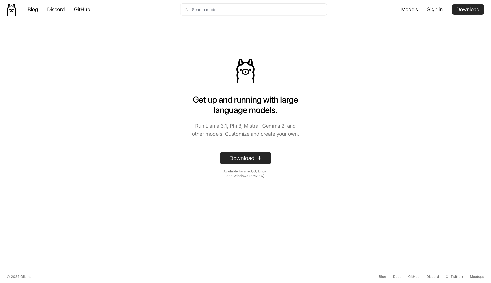

Topic
Working with Ollama proved to be insightful in various ways. It helps the user to attain an improved understanding of the concept of large language models. Ollama provides an open source platform to simplify the installisation of LLMs on a local systems. By that the user can generate text based on prompts, offering insights into how the models interpret language, process inputs, and produce outputs.
What is a large language model?
A Large Language Model (LLM) is an advanced type of artificial intelligence trained on vast amounts of text data to understand, generate, and manipulate natural language. These models, such as GPT, are capable of completing a wide variety of language-related tasks, including answering questions, generating content, and even translating languages. They contain billions of parameters, which allow them to recognize complex linguistic patterns and provide contextually relevant responses.
What is Ollama?
Ollama is an AI-powered tool designed to generate text and content using advanced language models that respond to user-provided prompts. Prior to engaging with the tool, a class discussion on the opportunities and risks associated with AI highlighted the importance of understanding and addressing this technology critically.
Ollama’s applications extend across a wide range of fields. In this context, it was primarily utilized for prototyping project ideas and enhancing skills in "prompt engineering." The project facilitated the development of entirely new concepts, demonstrating how AI tools like Ollama can inspire innovative approaches and ideas that may not have been considered otherwise.

Ollama Webview
Idea
After viewing a documentary on society's increasing focus on self-optimization and the constant drive for productivity, the concept of reversing the conventional "to-do" list was explored. This led to the development of a generative task assigner designed to provide users with one completely random and seemingly useless task each day. The task generation process was based on a prompt that ensured the task was simple and achievable within the user's immediate environment. The objective of this tool was to encourage users to reconnect with a childlike, imaginative mindset, where activities need not have a deeper purpose to be valued or meaningful.

Developement of the idea on Figma
Process
The project began with prompt engineering and the process of learning to work with Ollama. This phase involved a degree of experimentation due to the opaque nature of AI systems, which often operate as a "black box" with uncertain internal processes. The AI was capable of recognizing certain special characters, and providing examples was found to be an effective strategy. It was noted that experimenting with different words and phrases was crucial for optimizing performance.
The final prompt was developed to generate a random task that was childlike, creative, and realistic, ensuring it was achievable within the user's immediate environment and could be completed in under five minutes. Incorporating examples proved to be highly beneficial. Additionally, a feature was implemented allowing users to select their mood for the day, which would be factored into the task generation, aiming to make the interaction more engaging. While the quality of the generated tasks varied, the overall outcome was deemed satisfactory. To ensure the accesibility of the project independently from the local server, by the end, the project was run by OpenAI GPT 3.5 rather than a local LLM.
Takeaways
The opportunity to undertake such an unconventional project was highly valued, as it demonstrated the potential for AI to support diverse and experimental endeavors. This experience highlighted AI's role not only as a tool for creativity but also as a significant factor in reshaping creative processes. It contributed to a deeper understanding of working with AI and its implications.
The discussion on the risks and potentials of AI was particularly insightful, given its relevance to contemporary society and future roles in the creative sector. While AI has the potential to bring positive impacts across various fields, the risks associated with its current applications, particularly concerning data security and the use of personal images for AI training, were concerning. Fabian's contributions to the discussion were especially appreciated, providing valuable perspectives on the significance of understanding AI's broader implications. This dialogue underscored the importance of awareness regarding the political and societal impact of digital technologies, which would have been beneficial to explore earlier in the project.

Task Examples

Task Examples

Task Examples

Task Examples

Task Examples

Task Examples

Task Examples

Task Examples